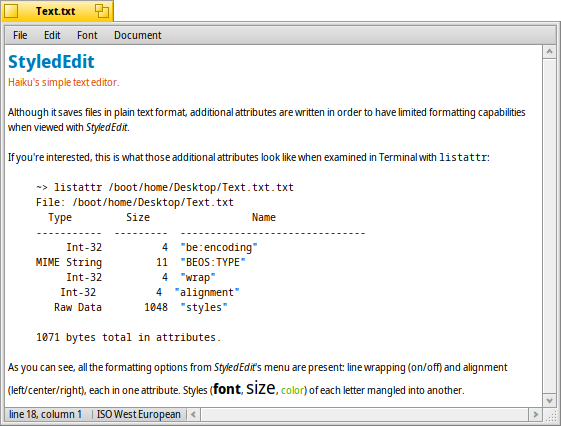

日本語
日本語 Français
Français Deutsch
Deutsch Italiano
Italiano Русский
Русский Español
Español Svenska
Svenska Українська
Українська 中文 ［中文］
中文 ［中文］ Português
Português English
English StyledEdit
StyledEdit
| Deskbarメニュー: | ||
| 場所: | /boot/system/apps/StyledEdit | |
| 設定ファイル: | なし |
StyledEdit is Haiku's simple text editor. Although it saves files in plain text format, additional attributes are written in order to have limited formatting capabilities when viewed with StyledEdit.
If you're interested, this is what those additional attributes look like when examined in Terminal with listattr:
~> listattr /boot/home/Desktop/test.txt
File: /boot/home/Desktop/test.txt
Type Size Name
----------- --------- -------------------------------
Int-32 4 "be:encoding"
MIME String 11 "BEOS:TYPE"
Int-32 4 "wrap"
Int-32 4 "alignment"
Raw Data 1048 "styles"
1071 bytes total in attributes.
As you can see, all the formatting options from StyledEdit's menu are present: line wrapping (on/off) and alignment (left/center/right), each in one attribute. Styles (font, size, color) of each letter mangled into another.
In any case, it's a nice idea having the possibility of colored text in different fonts and sizes while still being a normal text file. A ReadMe.txt, for example, is therefore readable in a shell on any platform and still has a bit of style when viewed via double-click from Haiku.
Actually using StyledEdit is so simple, we'll skip explaining every mundane menu item. Just write down your text then select the words you'd like to format and apply font, size and color from the menu. Line wrapping and alignment from the menu only work on the whole file.